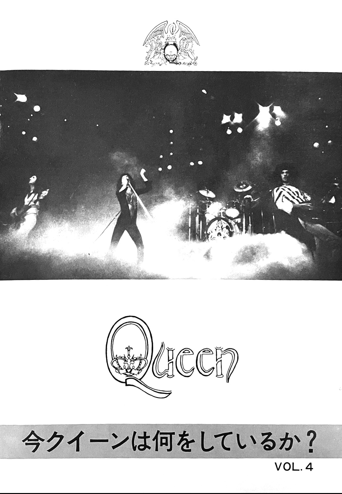
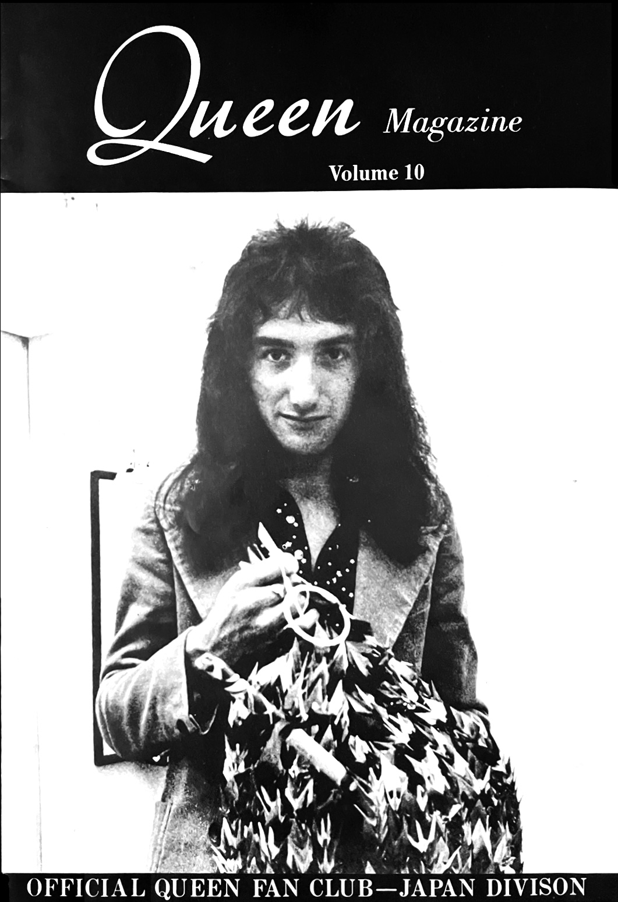
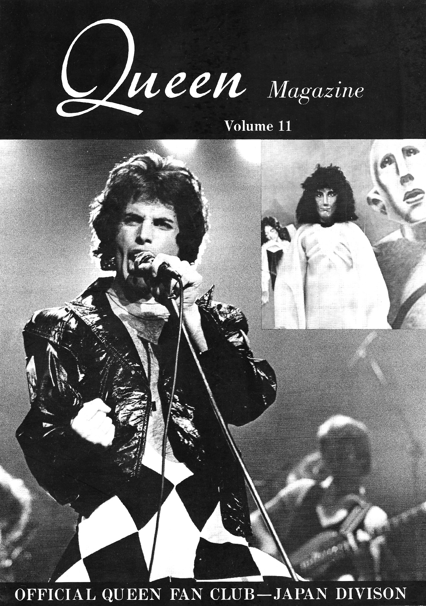
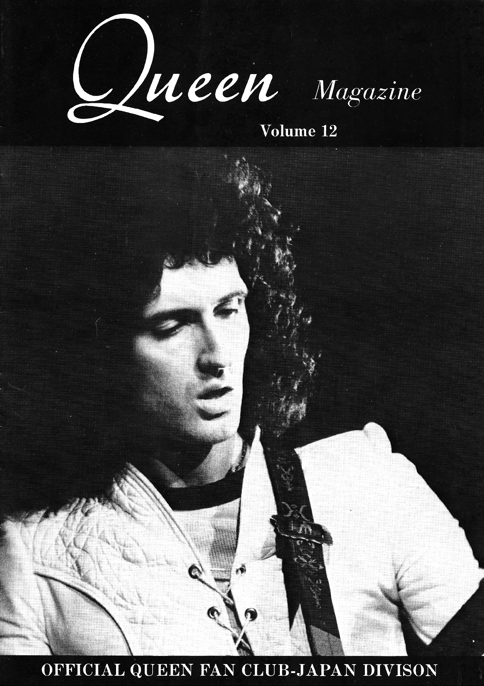
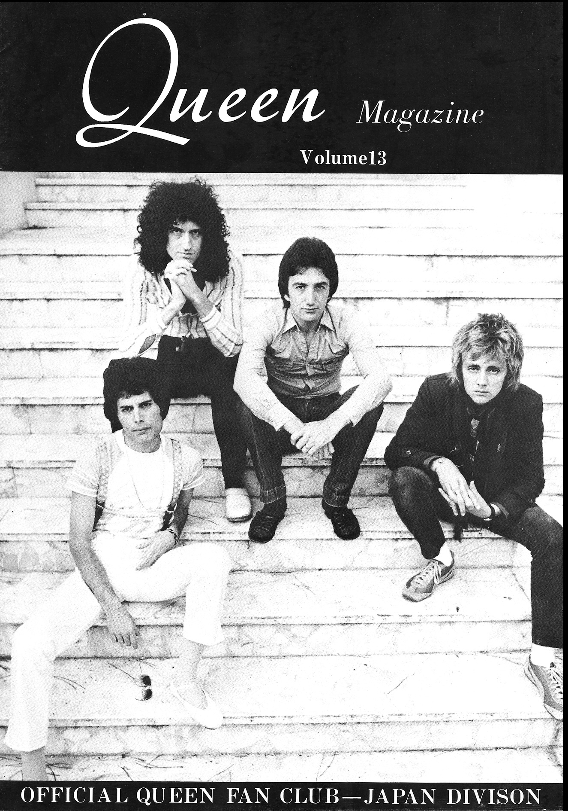
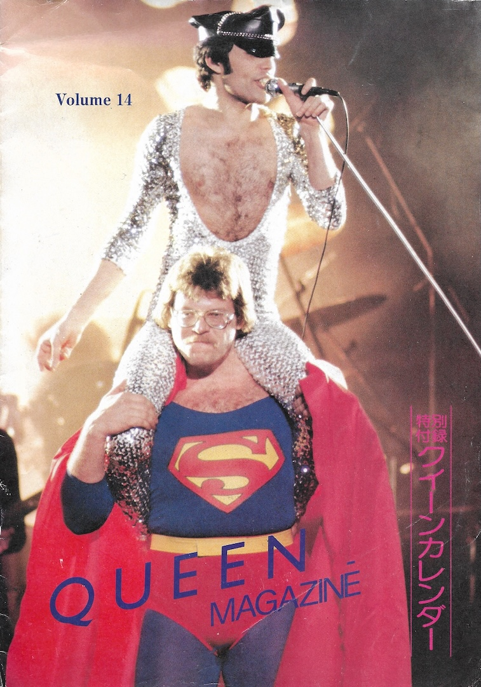

The Official Queen Fanclub of Japan
The Official Queen Fanclub of Japan started up through Warner Pioneer in October of 1975, dethroning the QFCJ. The magazines were highly localized for a Japanese audience, and while the Japanese and UK fanclubs worked cooperatively, they were separate organizations. Reflecting Japanese culture, the Japanese fanclub had a much more bureaucratic top-down feel to it from the start compared to the English-language fan club, which was (and continues to be) run out of the UK.In the summer of 1975, a flyer was released ahead of the inaugural issue of the magazine in order to announce this official new fan club. This flyer includes other information, including rumors of the band appearing in a Japanese commercial (which I don't believe ever came to be) and a note regarding a jacket that Brian accidentally left behind in Japan on their spring 1975 tour.
The first of the new fanclub magazines were relatively thin and printed in black and white, but they were full of information on Queen's Japanese tours, as well as a more organized focus on fanclub gatherings and promotions than could be found in the relatively laid-back UK publications of the time. But as time went on, more and more of the Japanese-language content was simply translated from the UK fanclub, including tour reports and personal messages from the bandmembers.
As the 70s progressed into the 80s, Queen's image in Japan matured from a faddish idol band into a serious and successful rock band, and this was reflected in the fan club magazines. Eventually, they underwent a stylistic overhaul in order to be brought into alignment with the English-language fan club. The original editor of the magazine was Warner Pioneer's Kazuo Seo, but starting with Vol. 6 in 1977, editorial duties were switched over to Keiji Inouye. From here, the magazine began to be run more like a periodical than a newsletter, with guest editorials and technical info on Queen's rigs and musical equipment. Queen continues to be popular with Japanese audiences up through the present day, but their time as a phenomenon amongst young people was over by the late 70s, and the heady, breathless tone of the earlier fan club magazines was gone.
I believe the Japanese Division was rolled over into the main International Fan Club after Freddie passed in 1991, but I'm not sure how many Japanese fan club newsletters were issued in total or what became of their archives.
Vol 1 — Autumn 1975

Vol 2 — Winter 1976

Vol 3 — Spring 1976

Vol 4 — Summer 1976

Vol 5 — Autumn 1976
Vol 6 — Winter 1977

Vol 7 — Spring 1977

Vol 8 — Summer 1977

Vol 9 — Autumn 1977

Vol 10 — Winter 1978

Vol 11 — Spring 1978

Vol 12 — Summer 1978

Vol 13 — Autumn 1978

Vol 14 — Winter 1979
